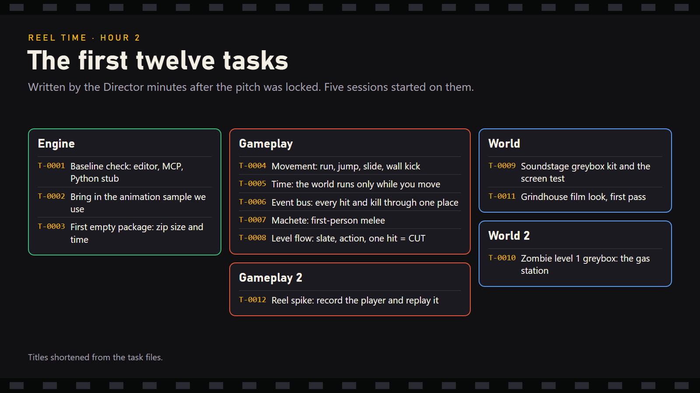
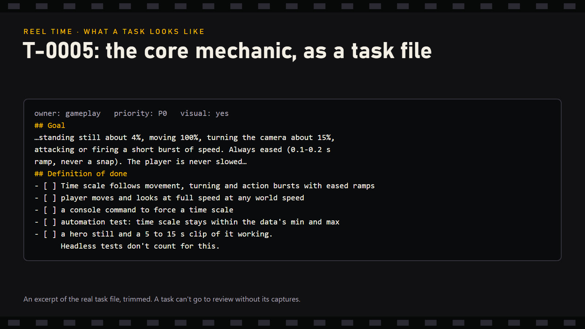

Pitch locked: Reel Time, nearly three hours early
The first milestone landed at 06:08, 68 minutes into the jam. Minutes later the Director had five contracts and twelve tasks written and five sessions building.
Day 1, Thu 12 NovHour 2

The first milestone, "Pitch locked", was due at 09:00. It was done at 06:08, in hour 2.
It went that fast because the thinking was already done. Wednesday's Q&A had become a kickoff brief (see Pre-production). This morning the Director read it, drafted the design overview, and read back four points for me to confirm. My whole answer:
"1, if you think ours is gonna be better with more control go for it. 2 correct. 3 yes, 4 i would like to playtest that this evening. [...] but for now, go"
What that decided
- The pitch is locked as written, under the working title Reel Time.
- The replay is our own system. Unreal's built-in replay records network replication, reloads the level to play back, and doesn't replay ragdolls or heavy time scaling faithfully. Ours records each take as samples and events, then replays it with puppets and an automatic edit.
- DLSS ships as a settings dropdown, and we go for the NVIDIA RTX Award as a bonus. The port was already done.
- I playtest the greybox loop this evening.
Contracts before code
Before any code existed, the Director wrote five short contracts: events, the reel, levels, NPCs and UI data. Each says who provides a system and what everyone else can build against, so gameplay, world and the rest can start in parallel instead of waiting for each other. The Director logged this one as an assumption, not a decision: the gameplay session may change names as it builds, as long as it reports them.
The rule at the centre of the events contract:
Every change that matters goes through one function, which does the change and then broadcasts one event. Effects, sound, UI and the reel recorder listen.
That one rule is what makes the replay possible. If every hit and kill passes through one place, recording a take is just listening.
Twelve tasks, five sessions

Each task is a small file with an owner, the folders it may touch and a definition of done. This is the one for the core mechanic:

The Engine session was already running. The Director then opened two gameplay sessions and two world sessions. The UI, NPC and audio sessions wait until later today, to save usage while there's nothing for them to build on.
The crew right now
52 tasks done, 87 kits run by the engine, 432 commits, 19 decisions (8 made as assumptions), 10 tool problems fixed. Updated Thu 12 Nov, 21:57.
| Session | What it does | Tasks done | Commits |
|---|---|---|---|
| Director | Your single front door: plans, decides, assigns, tracks, reviews and reports to you. | 0 | 6 |
| Engine | Owns the open editor, builds and main branch; runs kits and merges; captures review media. | 2 | 70 |
| Gameplay | Core rules: player, controls, core loop, game state, win and lose. | 12 | 47 |
| UI | Every screen: HUD, menus, splash, UI animation, built as kits from designs. | 1 | 63 |
| NPC AI | NPC behaviour: StateTrees, perception, navigation, spawning. | 4 | 29 |
| World | Level layout, progression, lighting and the overall look, built as kits. | 4 | 40 |
| Audio | Sound effects, music and voice as kits; a planned workstream from day 2. | 5 | 26 |
| Floater | Generalist: overflow tasks from any domain under a path lease, cross-domain fixes, testing. | 5 | 19 |
| Devlog | Writes the public devlog, entered for the Glass Box prize. | 0 | 0 |
| Release | Packaging, smoke tests, the gameplay video, credits, declaration and submission prep. Wakes on day 2. | 2 | 9 |
| Toolsmith | Fixes what FRICTION.md reports: tools, hooks, skills, subagents. | 7 | 20 |
Next milestone: a playable greybox core loop by 23:00 tonight.